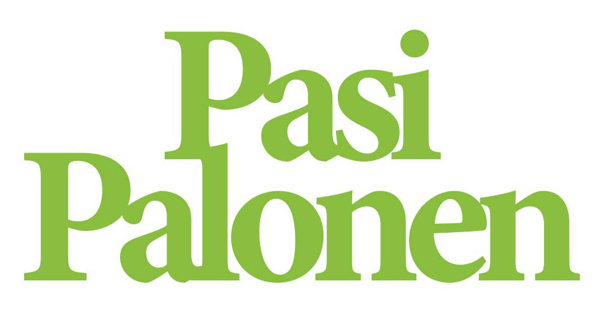
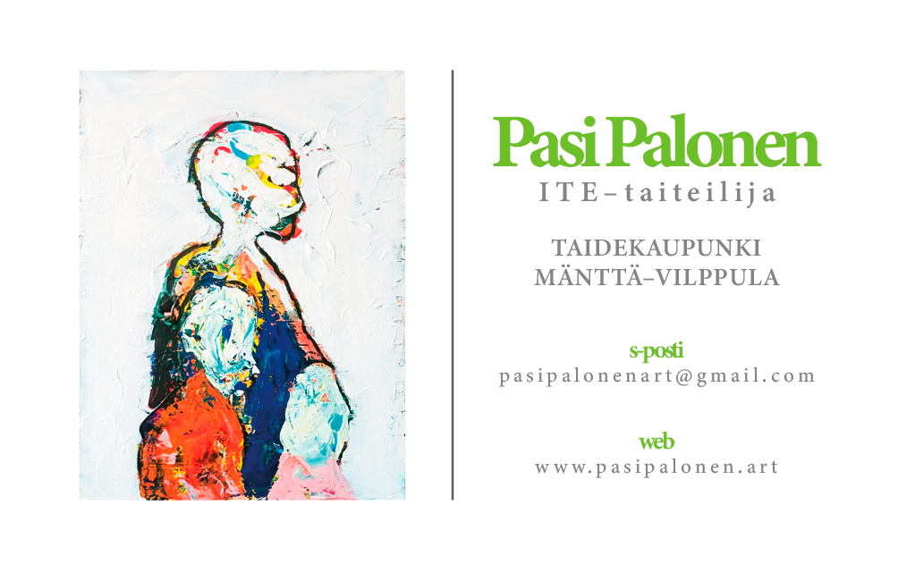
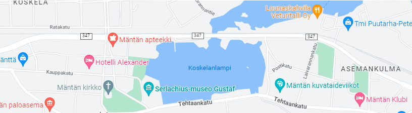

ITE-taiteilija

www.pasipalonen.art
Saatavilla olevat teokset
Kiinnostuitko jostakin teoksestani? Ota minuun yhteyttä sähköpostilla alla näkyvään osoitteeseen, kiitos!
Teokseni Taidesivut.net-taidemyynnissä!
KLIKKAA TÄSTÄ
Yhteys s-postitse: pasipalonenart(ät)gmail.com

